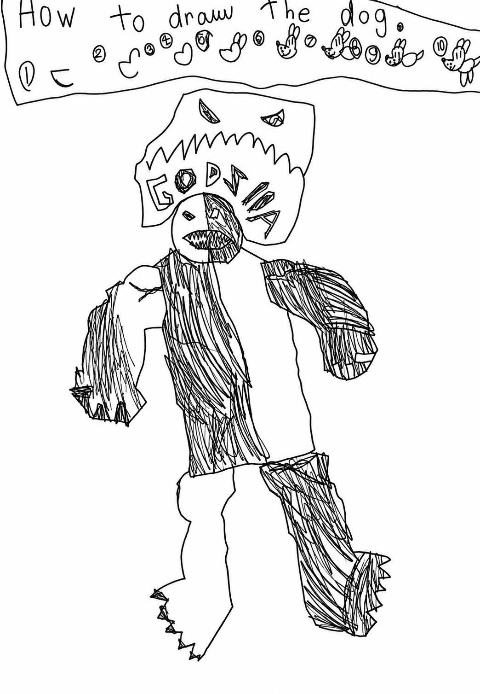

MURPHY’S COMICS ASTRA EDITION / 01
Dog Hog rides again.
A comic you can ride throughDrawn by Murphy. Full of trouble.

How to ride & what changed
Dog Hog moves by himself. Tap ↑ / ↓ to change lanes, Space to hop, E to use the Spring-o-matic, and hold Z for turbo. The spring recharges in four seconds.
Just Ride: assisted landings and quick recoveries. Turbo stays cool. Arcade: use A / D to lean in the air and land along the slope. Left / Right brake and accelerate on the ground. P pauses; M toggles sound.
Forked from Claude’s Excite Hog. Face and monster art are displayed directly from the separate AI-inked edition of Murphy’s comic; those source images are unchanged. The bike, scenery and supporting animation come from Claude’s engine. The spring invention and short story are Astra’s draft, ready for Murphy’s changes.